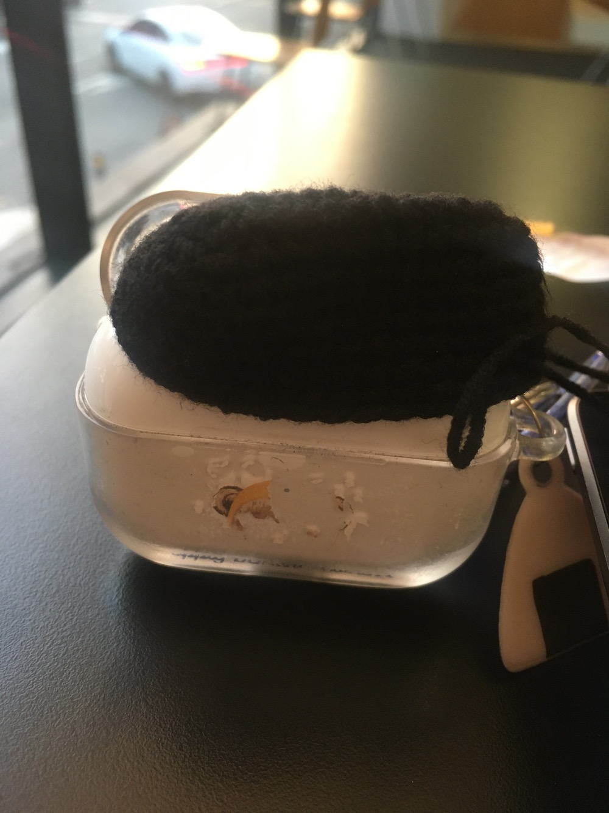

요즘은 무슨 생각을 하고 사냐면..
아무 생각 없이 살지는 않지만 무시할 수 있을 법한 생각을 하면서 사는 것 같다.
다 귀찮구나 싶고.. 역시 나는 쉽게 질리는 구나 그런 생각을 하고..
왜 눈이 오지? 그런 생각도 하고
누워있는 건 왜 이렇게 좋으면서 싫으면서
가만히 누워서 브라운 노이즈를 틀어놓으면 영원히 잠들 수 있을 것 같다는 생각도 하고
시간의 체계가 1년 단위라서 작년 이맘때를 돌아보다가 올해 지금의 삶이 어찌나 귀찮게 느껴지는지.. 그런 생각도 하고..
이 모든 건 근육량과 몸의 수분량과 균형잡힌 식사와 수면패턴과.. 그런 물리적인 요인 때문인 것도 안다! 일조량과 계절과 환경적인 것도 어찌나 영향을 주는지.. 인생은 살면 살수록 너무 많이 알게 되어서 좀 귀찮은 부분이 있다.
아쉽게 느껴지는 것이 있는지? 아쉽게 느껴지는 것이 없으면 왜..
전에 썼던 뻘소리를.. 다시 읽을 타이밍이다..
-
들을 노래가 없는 것도 좀 힘들다. 요새는 엔시티위시의 위시만 듣는다. 대단히 대단하지는 않은 데뷔곡이라서 그런가 계속 듣게 된다..
위시wish.. 갑자기 바라는 것에 대해 생각해보는데.. 뭘 바라나..
-
나는 아이돌에게서 동기부여를 받는 편인데.. 그런 점에서 요즘 가장 동기부여가 되는 아이돌은 라이즈의 원빈이다. 갑자기?
라이즈를 보면서 흠.. 그간 하이브가 장악한 엔터사업의 문제점이랄지.. 그리고 그것에 대한 해답으로 에셈은 이런 것을 내놓았구나 그런 생각을 했다. 원빈을 보면서, 이건 그냥 하이브(산하의 너무 많은 레이블) 아이돌에 최근에 더 많이 관심을 둔 사람의 자의식 과잉이기도 하지만, 남돌에 한해서 한동안 방탄소년단 일짱(대중적 성공의 측면에서..)시대였는데 이 시대 속에서 에셈이 내놓은 해답은 정통파로의 회귀가 아닐까 그런 생각이 들었다.
하이브에서 온갖 연습생, 서바이벌, 일반인 다 수집해서 전략적으로 레이블 마다 적당히 괜찮고 오타쿠도 좀 좋아할 만 하고 대중들도 얻어걸릴만한 남돌 팀들 만들어 놓을 때 에셈은 엔시티 하나 뿐이었으니까.. 사실 라이즈 이전에 엔시티들은 잘 몰라서 뭐라 할 말도 없긴 하다. 엔시티 체제를 벗어나서 내놓은 그룹이 라이즈라니. 라이즈는 이런 맥락에서 재밌다.. 그리고 동시에 엔시티 위시도 그만큼 재밌어진다.. 라이즈가 탈-엔시티로 에셈 남돌 세대 교체처럼 등장하고 엔시티 주역들은 군대를 가고 드림은 어쩐지 애초의 이미지를 벗어난지 오래 됐을 때 엔시티 위시는 시즈니 맞춤형 '느좋' 그룹 같은 느낌으로 등장한다..
미감?이 뭔지 여전히 도통 모르겠는데 미감으로 따지면 엔시티 위시 쪽이 아무래도 압승인데, 라이즈의 미감은 어쩐지 동방신기 때의 정통아이돌 운운하게 되는 것으로 솔직히 요즘의 것은 확실히 아니다. 음악도 마찬가지다. 엔시티 위시 쪽 음악이 솔직히 '느좋'으로 압승이라고 생각한다. 대중성이나 취향 같은 걸 떠나서.. 아니 떠날 수 있나.. 어쨌든 라이즈 음악은 좀 뭔가 아쉽고 단순하고 그냥 무난한 팝 음악이라는 감상 밖에 안든다. 그리고 앨범아트 좀 어떻게 해라 소리가 절로 나온다. 싱글 하나하나로 대중픽이 되기로 결심한 것인지? 동방신기, 엑소 전성기 시절의 수록곡 퀄리티를 생각하면, (잘 알지도 못하면서) A&R 일 좀 하세요 소리가 절로 나온다.
하지만 아이돌이 아트, 음악 좋은 것도 중요하지만 결국 스타성이 젤로 중요하구나 라는 걸 라이즈를 보면서 깨닫게 되는 것이다. 어차피 내 공간이라서 막말해보자면 엔시티 위시의 대영과 라이즈의 소희.. 대영이란 친구 노래 얼마나 잘하는지 잘은 모르겠지만서도 라이즈 소희가 아무래도 같은 메인보컬 포지션(+이것저것 포지션)에서는 여러 모로 압승이 아닐지..
돌아돌아 말하게 됐지만 원빈을 보면서는 방탄소년단일짱시대-엑소도 없고, 스트레이키즈나 세븐틴도 못따라잡은 대충 2019~2023년 정도?-에 에셈에서 뭔가 세뇌 교육을 시킨 것이 아닐까 싶을 정도로 성공해야한다라는 마음을 노골적으로 드러내는 게 재밌다고 생각했다. 아니 일단 에셈에서 데뷔하셨고 에셈 남돌 치고는 음원 순위도 좋고 개인 인지도도 대박이세요, 지금 뭔 브랜드평판지수 같은 그뭔씹 순위에서도 아마 이미 슈퍼스타이실 텐데, 근데 계속 더 성공해야 하고 이게 막 팬들 사랑에 보답하고 이런 걸 넘어서서 거의 뭐 책임감까지 느껴진다고 해야 하나.. 내가 너무 과하게 보고 있다는 것을 이쯤에서 인정한다. 하지만..
한동안은 그냥 아이돌이 인간으로서 잘 살고 아이돌을 일로서, 직업으로서 대하고 춤과 음악과 무대를 즐기고 적당히 chill할 줄도 알고… 이런 부분을 보면서 같은 사람으로서 동기 부여를 받기도 했는데 최근에 원빈을 보면서 그래, 이런 독기충이 등장할 타이밍이다, 이런 생각이 들었다. 그리고 나는 독기충과 노력충을 참으로 좋아하는 편이다.
한편으로는 나는 이제 이런 독기아이돌을 보더라도 뭔가를 해낼 수는 없다. 애초에 그럴 필요가 없기도 함?! 하여간 아주 또래였다면 실제로 많은 자극을 받았겠지 싶다. 그래도 독기아이돌을 보면서 직업적으로 저렇게까지 강하게 해내고 싶은 뭔가가 있는 삶이란 뭘까, 나는 어떤 것을 저렇게 치열하게 대하면서 살 수 있을지 그런 생각을 하게 된다.
치열하고 비장하게 살아야 할 사람들이야 그렇게 살겠지만 나는 애진작에 그런 삶으로부터 먼 방향으로 살아왔는데 이제 와서 좀 그런 것이 부러운가 싶기도 하다.
짜식 부러우면 부럽다고 말을 하지
ㄴ 사실 넘 부러웠어요..
적당히 살면 그만인데.. 그냥 붐붐베이스나 톡색시 같은 노래 들으면서 일이나 하면 되는데..
에셈이 이제 무슨 센터 체제로 바뀌었다고 하고 라이즈 담당 5센터는 일을 너무 못한다고 말이 많더라. 솔직히 처음에는 그룹이 정통파로 회귀하다 보니 팬덤도 좀.. 유난스러운 부분이 있나 싶었는데 실제로 5센터가 일을 참 못하기도 하시더라. 흠.. 뭐 어차피 알아서 돈 잘 벌 그룹이겠지만 좋은 기획자가 꼭 붙기를..
아 최근에 노래 가사 중에 좋다고 생각한 구절이 라이즈 노래 중에 있는데.. 라이즈의 메모리즈 노래 가사 중에 [내가 제일 좋아하는 거야] 부분이 들을 때마다 참 좋다. 왜냐하면? 제일 좋아하는 거라고 자신있게 말하는 게 좋은 것 같다. 그리고 그걸 구어체로 말해버리는 것도 좋은 것 같다.
이 뻘소리를 여기에 올리고 싶어서 바득바득 뜨개질을 한다. 원빈의 모에화(..) 중 하나인 초코캣 에어팟 케이스를 만들려고 생각 중이다. 지금 이걸 쓰는 순간에는 아무것도 만들어져 있지 않지만 그럴 셈이다. 만들 수 있겠지?!
+
아직도 못만들었다. 어제 뚜껑 좀 떠봤는데 사이즈가 영 안 맞아서.. 유튜브에서 10코 잡으라고 했는데 영 너무 작아서 12코로 늘려봤는데 아무리 끼워봐도 억.뚜껑 모양새가 된다.. 다시 14코 잡고 떠볼 예정이다. 에휴..
